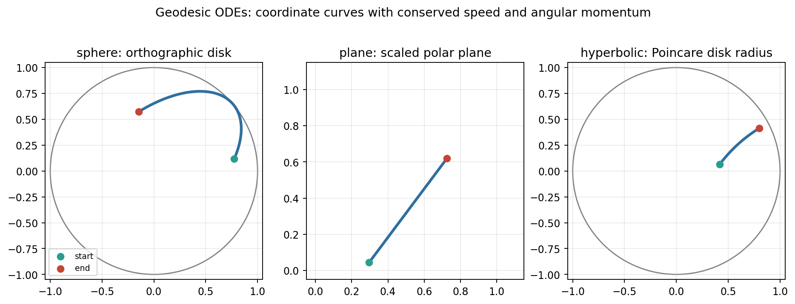
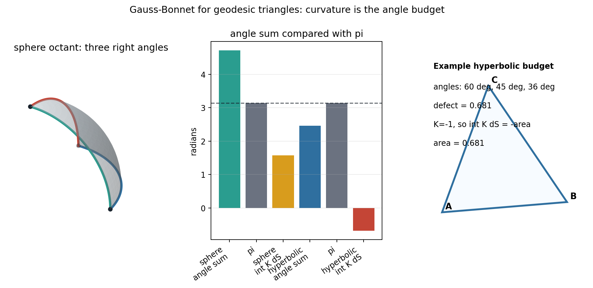
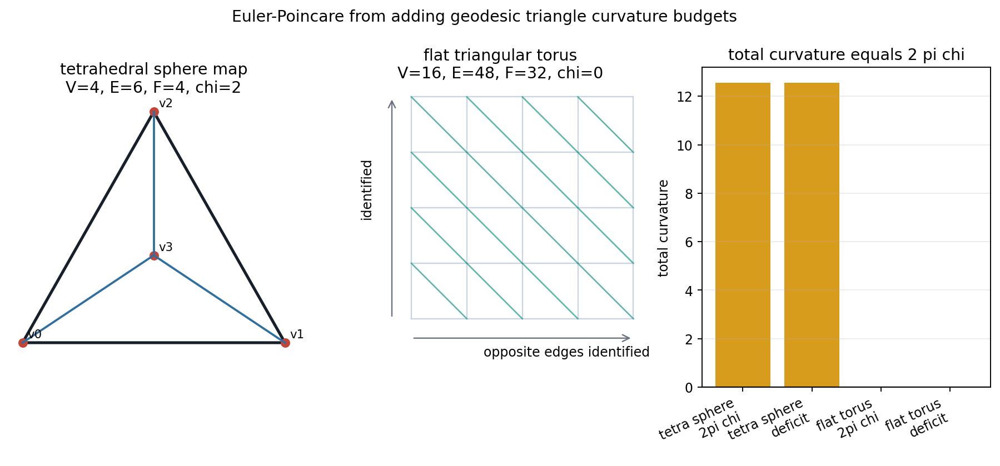
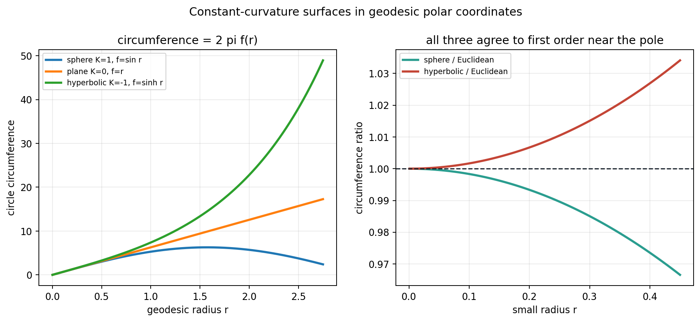
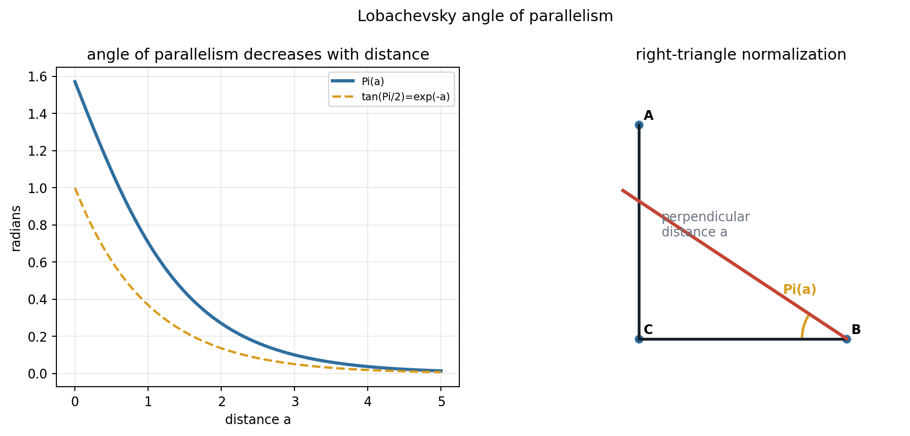
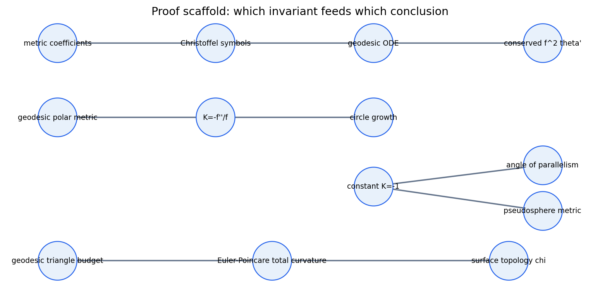

Metric data turns "straightest possible" curves into differential equations, then turns triangle angle budgets into curvature and topology.
A geodesic is the curve whose acceleration has no tangential component when measured by the surface metric.
First fundamental form → Christoffel symbols → geodesic ODE → curvature budgets → Euler-Poincare.
| Model | Speed drift | Momentum drift |
|---|---|---|
| sphere | 2.93e-12 | 2.06e-12 |
| plane | 8.65e-13 | 2.69e-13 |
| hyperbolic | 9.86e-13 | 1.57e-11 |


| Model | Angle budget | Signed integral |
|---|---|---|
| unit sphere octant | +1.5708 | +1.5708 |
| hyperbolic K = -1 | -0.6807 | -0.6807 |
Positive curvature appears as angle excess; negative curvature appears as angle defect.


| Geometry | f(r) | K |
|---|---|---|
| sphere | sin r | +1 |
| plane | r | 0 |
| hyperbolic | sinh r | -1 |
Checks confirm tan(Pi/2)=e-a, cos(Pi)=tanh(a), and sin(Pi)=sech(a) to roundoff tolerance.

The cusp edge at u = 0 is excluded, so this is a local model of negative curvature rather than the full hyperbolic plane.
| Model | Expected K | Mean estimate |
|---|---|---|
| sphere | +1 | 0.999992 |
| plane | 0 | -9.28e-15 |
| hyperbolic | -1 | near -1 |
Circle growth is not only a drawing. It is a metric experiment that reconstructs the same curvature parameter used in the geodesic equations.
The check file reports maximum recovery error below 7.6e-6 after unstable boundary samples are avoided.

Final takeaways: geodesics are metric-governed curves, Gaussian curvature is intrinsic, and topology appears when local curvature budgets are summed over a closed surface.